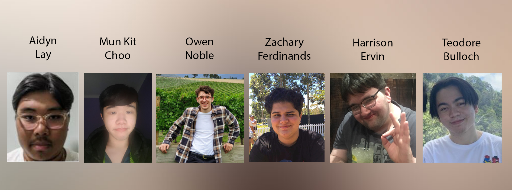

Team Profile
Aidyn Lay:
My name is Aidyn Lay, my student number is S3899299. (S3899299@student.rmit.edu.au) Born in Australia, and of East Timorese/Chinese background. Hobbies I enjoy include deconstructing video game consoles and collecting video games to resell or collect dust on my shelf. My interests in IT stem directly from the world of pc building, and software. I have had previous experience with IT through taking software development and data analytics classes in highschool.
Sam (Mun Kit) Choo:
My name is Sam (Mun Kit) Choo, my student number is s3899850 with the corresponding email s3899850@student.rmit.edu.au. I was born in Malaysia and very poorly speak Cantonese however have since then moved to Australia at the age of 1 with my Dad, mum and older sister who also was enrolled in RMIT. Since then, I have become an Australian citizen, successfully graduated year 12 and am currently enrolled in Bachelors of IT at RMIT or BP162. My interest in IT started back when I was 12 and I got my first laptop. I gradually started getting hooked on video games like TF2 at first then League of Legends through YouTube and since then have had experience in programming through year 12 ‘Software Development’
Owen Noble: My name is Owen Noble, and my student number is s3780268. I am from Melbourne, Australia. My backgrounds include English, Dutch and Italian. I am studying the Bachelor of Information Technology at RMIT as a first-year student. In terms of my IT interest, I find networks within businesses quite interesting, and I could see myself having a career in something to do with this. While my IT experience is limited, I do have experience in building computers, having built my own and also a few of my friends’ PCs in the past. Outside of IT, my hobbies include watching and following soccer, running, going to gym, walking my dog and working on my car.
Zachary Ferdinands:
My name is Zachary J Ferdinands, my student number is s3896834 and my email is s3896834@student.rmit.edu.au. I was born in Sydney and moved to Melbourne when I was a few years old, back to Sydney when I was in prep and then back to Melbourne in year 6. I was born half Sri Lankan from my Dad and half Canadian from my Mum. My hobbies include playing guitar + electric bass, listening to music (mostly hip hop) and playing video games. My interest in IT stemmed from learning how to operate my family’s old windows xp computer as a kid for the purpose of playing club penguin. Over time my enjoyment of video games and learning about computers mostly went hand in hand, learning over the years through youtube tutorials and a few classes in year 7-9. In year 10-11, I took VCE VET Digital Media and Technology for 2 years as an early subject, being one year younger than my classmates. In year 12, I took 3/4 software development and 3/4 data analytics, confirming that I really did love IT and wanted to study it into uni.
Harrison Ervin:
My name is Harrison Ervin. My student number is s3895375 and hence my email is s3895375@student.rmit.edu.au. I was born in Ballarat and have lived there for my entire life, the same goes for both of my parents. I graduated Year 12 last year at Ballarat Clarendon College. My hobbies mainly consist of consuming a lot of media, primarily through video games and watching films or anime. The large majority of my IT experience stems from the fact that I have had to use my laptop for classwork and homework in nearly all of my classes since around Year 6 due to my dysgraphia making my handwriting nigh illegible, as well as me taking Applied Computing: Data Analytics in VCE.
Teodore Bulloch:
My name is Teodore Bulloch but my nickname is TeeJay which comes from the letters of my first-name (Teodore) and middle-name (James).My RMIT student number is S3901063 and my email is; S3901063@student.rmit.edu.au I’m half Filipino and half Australian. I was born in the Philippines but I’ve been living in Australia for pretty much my whole life so I’m pretty white-washed. The only word Filipino word I know is tubig, which means water and I only know that because it’s basically two English words stuck together (too big). I graduated from Emmaus College last year and decided to take on a Bachelor of Information Technology here at RMIT. I’m a massive movie/tv nerd and I love discussing and critiquing my favourite shows and movies such as Star Wars, Breaking Bad, Better Call Saul, Prison Break, NGE, TPN and ASOUE. I hope to make my own book, game, comic or anything down the line even if it’s just something I work on at home.